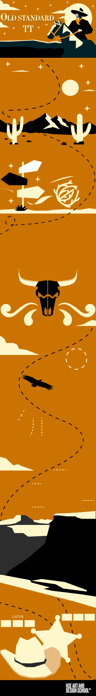

Созданный Алексеем Крюковым
как дань уважения старым шрифтам
XIX — начала XX веков, этот
шрифт предназначен в основном
для классической типографики.
как дань уважения старым шрифтам
XIX — начала XX веков, этот
шрифт предназначен в основном
для классической типографики.
НАЧЕРТАНИЯ
BOLD
Italic
Regular
ГЛИФЫ
! ” # $ % & ’ ( ) * + , - . /
: ; < = > ? @ [ \ ] ^ _ ` { | }
~ € £ ¥ § © ® ™ ° ª º À Á Â Ã Ä Å
Æ Ç È É Ê Ë Ì Í Î Ï Ñ Ò Ó Ô Õ Ö Ø
Ù Ú Û Ü Ý Þ ß à á â ã ä å æ ç è é
ì í î ï ñ ò ó ô õ ö ø ù ú û ü ý þ ÿ
: ; < = > ? @ [ \ ] ^ _ ` { | }
~ € £ ¥ § © ® ™ ° ª º À Á Â Ã Ä Å
Æ Ç È É Ê Ë Ì Í Î Ï Ñ Ò Ó Ô Õ Ö Ø
Ù Ú Û Ü Ý Þ ß à á â ã ä å æ ç è é
ì í î ï ñ ò ó ô õ ö ø ù ú û ü ý þ ÿ
ОСОБЕННОСТИ
К
каплевидные
терминалы
терминалы
X
Д
высокая
контрастность
контрастность
Щ
ПРЯМЫЕ ЗАСЕЧКИ
Ц
СИСТЕМЫ
ПИСЬМА
ПИСЬМА
КИРИЛЛИЦА
A a B b C c
А а Б б В в